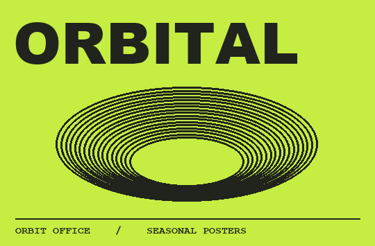

跳至内容
轨道设计季 · 单焦点海报
Atlas.exe
版式总览
切换版式 ▾
同一组印样 · 看杂志排法
GitHub
ORBIT OFFICE
平面设计季 · 系列海报
ORBITAL
SEASON
轨道季
图形研究
专色印刷 / 三幅一组
印样夹

轨道 · 椭圆
构成 · 直角
印痕 · 错位
版式笔记 · 单焦点海报
阅读顺序
巨型字标与轨道图形共用一张画布，日期和介质压进底边。
适用内容
开幕预告、唱片首发、单件作品封面
使用边界
主信息只能有一个。长说明放进底边的作品签，避免争抢视线。
图片为主 / 轨道设计季
v2.0.0
Windows 95 版式图鉴
全部版式
单焦点海报
轨道设计季
长文单栏
一片叶子的三次观察
非对称影墙
从街面到河岸
杂志图文混排
油墨经过的地方
卡片目录
沿途邮局
双联对照
房子的两种看法
属性矩阵
窑房器形表
主从列表
夜班试听台
纵向时间线
一张邮票的行程
空间标注图
五颗星的位置
图片查看器
×
切换票态

 轨道设计季 · 单焦点海报Atlas.exe
轨道设计季 · 单焦点海报Atlas.exe